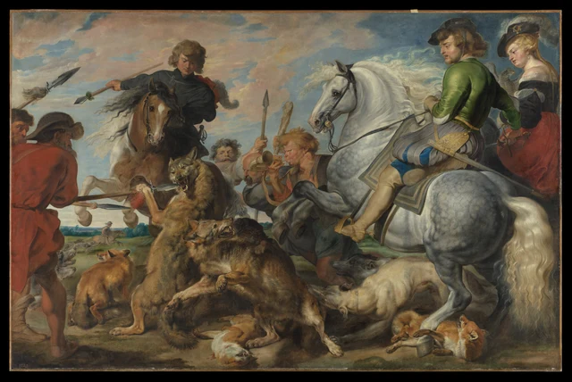
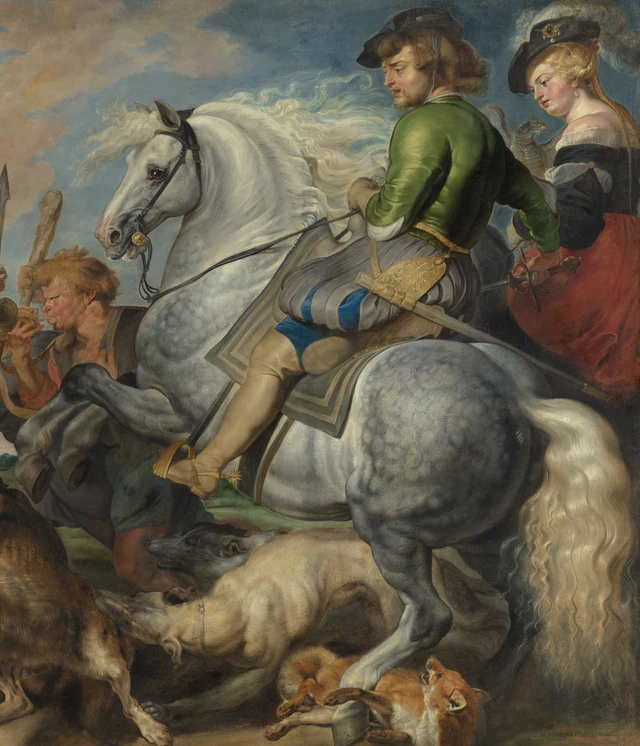

Begin with the whole expanse of the picture. There is a broad sky and a low horizon, apparently enough room for horses to sweep across the scene. Yet the horse on the left raises its forelegs almost straight toward us, while the large gray on the right presents its hindquarters and turns its head and forelegs back to the left. Between them, two wolves, a pack of hounds, long shafts and human faces crowd together. The width gives the action tremendous scope; it offers the animals at the center remarkably little room to escape.

This reading puts encirclement and resistance at the heart of the painting. Forces enter from several directions and meet opposition within a very short distance. The chase supplies the story; the collisions organize what we see.
Around 1616, Rubens began the great hunting pictures of this period. The Met places this work at the beginning of that sequence and explains how paintings on this scale offered princely interiors an alternative to hunting tapestries, with much lower demands on time and money. Hunting privileges belonged to major landowners. Expensive mounts, rich dress and a substantial hunting party thus presented prospective patrons with an activity that marked their position. The dimensions become more meaningful in this setting. Nearly 3.8 meters wide and taller than an adult, the canvas turns a socially distinguished pursuit into a wall-sized display of power. Museum catalog
Two horses press the space toward the center
A pale blaze runs down the left horse's face. Its face and chest are directed largely toward us, and both forelegs bend upward, their light color conspicuous against the darker body. This is volume pushing out toward the viewer: we encounter the animal's breadth head-on, rather than the extended silhouette of a horse passing across our field of vision. Above it, the rider stretches an arm and a long shaft to the left. Dark clothing and streaming mane spread the upper group sideways, while the bent legs gather its expansive energy back against the chest.
The gray horse on the right works differently. Its great rounded haunch lies near the lower right corner; the torso stretches across the picture, and the neck curves leftward to a lowered muzzle. Both forelegs fold up, bringing the hooves close to the men in the middle. Follow the animal from its broad light flank through the curved neck to the head, and you return to the space above the wolves and hunters. The most conspicuous creature in the picture keeps directing attention elsewhere.
The pair is far from a symmetrical arrangement. One horse is narrow and frontal, the other broad and oblique. The first horse's forelegs appear behind the standing wolf; the second horse's legs extend above people and dogs. These differences matter. Two mounts running side by side would let the eye travel with them. Here their orientations converge, and looking requires a change of direction. Speed becomes something concentrated in a place that is difficult to pass through.

Both horses lift their forequarters, but they make weight felt differently. The pale legs on the left seem checked by an obstacle; the large body on the right makes the central space lower and narrower. The forehooves of both horses hover close to other bodies, intensifying the sense of contact about to occur, or already under way.
The short distance between blade and mouth
Just left of center, a wolf rears up, its chest and belly lengthened vertically and its forepaws reaching left. A shaft extends across from the hunter in red. Its metal blade enters the open mouth. Jaws, paws, shaft and red tassel are packed very close together. A vast hunting scene suddenly contracts to a measurable interval. Danger is no longer conveyed simply by recognizing a fierce animal. Hard metal and vulnerable flesh have actually met.
The blade's straight, bright edges cross the dark mouth, with teeth showing between the jaws. The shaft prolongs the hunter's action, carrying force from the left toward the wolf's head. The rising body interrupts that horizontal pressure. Nose, brow, teeth and lifted paws gather around the same point of resistance, making the body's contortion intelligible.
Different lines have different jobs here. A low shaft is nearly horizontal; the mounted hunter's weapon cuts diagonally across the upper left; behind the wolf another spear stands almost upright, beside a raised club. These are actions with different lengths and bearings. They remain traceable among the soft curves of manes, sleeves and bodies. Straight lines make the congestion legible, while giving the bent forms around them a greater sense of strain.
Below, the other wolf raises its head toward the upper right, mouth open, while its body descends diagonally toward the lower right. A dark dog presses behind it, its head and paw emerging beside the wolf's outline. Farther right, a pale dog lowers its head into the tangle, with another gray, narrow head visible just above. It is difficult to separate every animal into a complete silhouette. We can nevertheless follow the succession of heads, backs and paws and see how contact expands into an entire knot of bodies.
Overlap does not make all these forms indistinguishable. The upturned wolf's mouth is picked out by teeth and a light muzzle; the dark dog's face sits within a shadowed mass of fur. A forepaw passes across another coat, its toes and claws making it recognizable. The eye identifies a body only to have another body interrupt its continuation. We assemble the scene in sections, an experience that corresponds closely to the impeded actions within it.
How the largest light area brings the eye back
The gray horse is the largest light shape in the painting. Its neck and shoulder approach creamy white, while the haunch darkens into dappled gray. The long curve of the neck, rounded belly and slender outlines of the hind legs articulate that pale mass from within. Light follows the turns of the body, establishing a substantial volume rather than a flat patch on the surface.
Black reins cross the pale neck and run to the green-clad rider's hand. His upper body turns left and his face looks down. One leg descends along the horse's flank, linking the green doublet to a buff boot much lower in the picture. The horse's orientation, the diagonal reins and the man's gaze reinforce one another. Even if the gray first captures our attention, several visible routes return it to the center.

A bright strip runs along the green sleeve and quickly deepens as the cloth turns into a fold. Its smooth changes suggest satin. Nearby, pale strands of mane branch and curl, their outer edges dispersing against the sky. The wolf's coat is denser and shorter, with a finely broken outline. Across adjacent surfaces, light becomes the plane of a fold, the curve of a hide or the tip of a hair. The scene's turbulence retains these distinctions of texture.
Nor do the faces simply repeat one expression. At the center, the horn blower's cheeks swell, and the bell of his instrument opens toward the left and forward. Other faces crowd between necks, backs and weapons. They occupy small areas, but highlights on brows, noses and cheeks make a sequence of human presences through the great animal masses. The horn may lead us to imagine sound. What the paint actually provides is the connection of mouth, hands and instrument, and a round opening set among crowded outlines.
The two mounted figures at upper right occupy a higher level than the hunters on foot; clothing and posture further distinguish them. The green-clad rider's turn connects his elevated position with the struggle, while the woman behind him remains more upright and less agitated. Watching, directing, approaching and fighting coexist without requiring everyone to perform the same violent gesture. The riders’ gazes thus mediate our view of the struggle: we notice their turned heads, then follow their looking down toward the animals.
Open distance and a blocked foreground
A low horizon appears intermittently between the large groups. Through a gap toward the lower left, a small distant rider and dogs occupy green fields. Cool, quieter blue-greens establish the distance, while brown, ochre, red, black and forceful gray-white crowd the foreground. Scale and color work together: the far scene extends sideways, whereas the near bodies almost pile on top of one another.
The glimpse deserves attention. It shows that the picture can offer open terrain and makes the foreground blockage more definite. There is also a great area of sky, with clouds spreading above the heads. Openness has not disappeared. It simply fails to become usable passage beneath the wolves and hounds. Our gaze can cross the sky with ease, but the picture supplies no equally easy route through the struggle below.
The foxes along the bottom alter the rhythm again. At lower left a fox stands with its body turned away and its head looking back. Near the bottom center another lies overturned, its pale underside and head close to the ground, with red marks beside the mouth. At lower right a third fox lies on its back, bent legs near a hoof. Standing, lying and turning over give the bottom of the image a rhythm different from the lifted bodies above. The extended and curled fox bodies also hold our attention near the ground, where so many bodies crowd beneath the raised hooves.
The longer we attend to this lower register, the harder it is to treat the whole scene as exhilarating motion without cost. For aristocratic viewers it could connect with rank, courage and remembered hunts; a viewer today may respond first to the danger facing the quarry. The painting's ability to organize attention does not require approval of the killing. Either response must address the same arrangement: the elevated people can still watch, while animals below are pressed toward earth and hooves.
The present edges have a history
The surviving canvas is about 3.8 meters wide. The Met's current account holds that it was originally larger, roughly 11 or 12 feet high by 18 feet wide, and reduced principally at the top and left. The two wolves would then have been closer to the compositional center. The catalog suggests it may have been cut down in Rubens's studio after prospective buyers found its size difficult to accommodate, while acknowledging uncertainty about the circumstances. Museum catalog
The question has received different answers. The museum's bibliography records that a 1984 study regarded technical examination as evidence against substantial trimming. The catalog text dated 2011 and the museum's current account instead accept an originally larger canvas. We can therefore discuss how today's edges intensify the congestion without claiming an exact reconstruction of what was removed, when it happened or how every missing part looked. The figures cut into by the left edge and the headwear close to the top are, first of all, conditions of the object we see today.
The full attribution, “Rubens and Workshop,” matters too. The museum describes a practice in which assistants helped lay in designs, backgrounds and subordinate details on large canvases, followed by Rubens strengthening contours, lights, shadows and textures. In correspondence conveyed through Toby Matthew to Dudley Carleton, Rubens insisted on his responsibility for executing the wolves and foxes. That is documentary testimony. It does not enable us to assign every hair and highlight to an individual hand from a digital photograph.
The achievement of the surviving picture can still be tested by looking. The enormous pale horse, the blade entering sideways, the rising wolf and the partially inseparable animals below retain several directions in one field. We feel speed and repeatedly encounter places where speed cannot pass freely. Encirclement and resistance are the means by which this expansive hunting scene becomes an encounter almost upon us.
Optional reading Testing direction and appearance with SAE
The following exercise draws on the perceptual direction within Han Qin's SAE (Self-as-an-End) aesthetics. It is a contemporary way of looking, not evidence of the painter's intention. SAE Judgment and Aesthetics; The Beauty of Perception
Temporarily put aside such labels and judgments as “hunt,” “courage” or “cruelty.” Trace a few visible directions in the air: where does the left horse's chest face, where does the gray's head turn, from where does the horizontal shaft enter, and how does the upright wolf intercept it? Now trace your own looking. From the largest light area, which edges, reins or faces lead your gaze back to the middle? The implied direction of a body and the actual route of attention are different things.
This makes “full of movement” a set of relations that other viewers can check. If you see predominantly a fluent circular motion rather than obstruction, find a route that can be followed continuously and ask what happens at the wolf's mouth, the hooves or the overlapping bodies. Equally, this essay's emphasis on resistance must account for the spreading sky and flowing mane. Both flow and resistance are visible; the interpretation needs to explain their conjunction.
Now bring the names and history back: the positions occupied by riders, hunters on foot and quarry give visible form to an aristocratic hunt. Differences in the pressure borne by their bodies also provide specific grounds for ethical judgment. The exercise should make the next look more exact: along a single route through the image, a reader should be able to point out where movement continues, where it turns and where another body blocks it.
Images and sources
Visual descriptions are based on the Met's 4000 × 2672-pixel image. The full official JPEG is unchanged, including its black surround and painted edges. The two details are direct crops saved as PNGs, preserving the source pixels within each crop and the embedded ICC color profile. There has been no resizing, color adjustment, retouching, reconstruction or generated imagery. Screen conditions still affect color and apparent scale.
The images are available under the museum's Open Access policy, with CC0 terms. This is an independently written close reading. Historical statements draw on the museum catalog and its cited literature; the interpretation and SAE application do not represent museum endorsement. See the accompanying References and Image Credits.